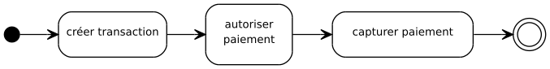

REST¶
REST est un style d’architecture pour les systèmes hypermédia distribués.
En 2000, Roy Fielding a formalisé l’architecture REST dans le chapitre 5 de sa thèse de doctorat. En 2007, Leonard Richardson et Sam Ruby présentent ROA (Resource Oriented Architecture) dans leur ouvrage RESTful Web Services. ROA est devenu depuis le modèle d’application de REST pour les API Web.
Le modèle REST a été conçu au moment de l’évolution de HTTP vers sa version 1.1 afin d’assurer les évolutions nécessaires du World Wide Web dans les années 1990. HTTP est ainsi le premier protocole basé sur une architecture REST.
REST est le modèle d’architecture du Web ! Cela ne signifie pas que l’ensemble du Web se conforme au modèle décrit par REST mais cela signifie que HTTP a été conçu selon ce modèle (principalement pour des raisons de scalabilité et de fiabilité). Dans ce chapitre nous prendrons donc HTTP comme exemple pour illustrer notre propos, mais il faut garder à l’esprit que REST est un modèle plus général.
Depuis 2007, beaucoup de développeurs Web ont voulu créer des applications RESTful… sans réellement comprendre ce que REST signifie et implique. Il en a résulté une tour de Babel d’articles et de posts sur le Web (voire de publication d’ouvrages) expliquant ce que devait être une application RESTful… mais sans véritable rapport avec REST voire en étant en complète contradiction avec le modèle d’architecture auquel les auteurs souhaitaient se conformer.
La ressource¶
REST est un style d’architecture orienté ressource. Mais qu’est-ce qu’une ressource ?
Any information that can be named can be a resource
—Roy Fielding - Thèse de doctorat
Dans le domaine du Web, la notion d’adressabilité (addressability) vient renforcer celle de nommage. Une ressource Web est donc quelque chose qui est adressable à partir d’une URI.
Par exemple, cette page est adressable à partir d’une URI, elle est donc une ressource Web.
Une ressource Web peut être accessible à partir de plusieurs URI. Une bonne pratique consiste à considérer qu’une des URI est l’URI canonique.
Par exemple une ressource peut être constituée par la liste des modules d’une formation. Elle peut être adressable à partir d’une URI précise mais également d’une URI plus volatile comme celle donnant la liste des modules pour la formation en cours. Ces deux URI désignent la même ressource pendant une période :
Nous avons vu dans les cas d’utilisation de HTTP, que la
canonicalisation pouvait se traduire par une redirection avec un code
statut 307 (Temporary Redirect) ou par l’en-tête de réponse
Content-Location.
URI informative ou URI opaque ?¶
Concevoir des URI descriptives et hiérarchiques semble a priori une bonne pratique. Par exemple, si l’on considère cette URI :
http://formation.fr/bordeaux/informatique/web+services/2018 (URI canonique)
La structure de cette URI est porteuse d’information et le lecteur comprend facilement qu’elle suit un modèle du type :
http://formation.fr/{ville}/{spécialité}/{module}/{année}
Cette bonne pratique ne relève absolument pas d’une contrainte de l’architecture REST. Il s’agit souvent d’une erreur d’interprétation des développeurs de penser que REST repose avant tout sur la conception d’une API basée sur des chemins d’URI. Une URI est simplement un nom donné à une ressource. Pour notre exemple, l’URI suivante est tout aussi valide :
Dans une architecture REST, les noms ne servent qu’à désigner les ressources. Il n’y a aucune règle particulière à connaître et à partager sur la signification de ces noms. Pour le Web, les URI sont la plupart du temps imposées par le serveur mais le client n’a pas à connaître les règles qui prévalent à leur construction. Cela donne beaucoup plus de liberté au serveur si son évolution implique de formaliser les URI différemment. On dit ainsi qu’une URI doit être opaque pour le client.
On trouve malheureusement énormément de littératures sur les soi-disantes règles à respecter dans la façon de créer des URI pour des API RESTful. On peut prendre comme exemple l’ouvrage de Mark Massé : REST API Design Rulebook. Il nous explique ainsi qu’une URI désignant un document doit se terminer par un nom au singulier et une URI désignant une collection doit se terminer par un nom au pluriel. Ces règles stylistiques sont certes utiles pour améliorer la lisibilité mais elles n’ont aucun rapport avec REST. Pire, elles véhiculent l’idée qu’un client pourrait tirer partie de ces règles pour deviner les URI des ressources du serveur.
Ressource contre RPC¶
Il existe une autre grande famille de modèles d’architecture pour les échanges entre processus : le RPC (Remote Procedure Call). L’idée générale est de permettre d’invoquer une procédure à travers un réseau pour la faire exécuter sur un serveur et récupérer le résultat par le client.
Il existe une différence de perspective entre une approche RPC et une
approche orientée ressource telle que REST. Avec le RPC, la conception
du service se focalise sur le traitement et sur l’appel à une procédure
comme on le ferait dans un langage impératif. Dans une approche orientée
ressource, la conception du service se focalise sur l’information et on
tend à uniformiser les opérations disponibles pour manipuler cette
information (les méthodes HTTP GET, PUT, POST, DELETE et
PATCH en sont une très bonne illustration). Si l’approche orientée
ressource peut sembler plus restrictive dans un premier temps, elle est
en fait beaucoup plus simple à implémenter et beaucoup plus facile à
généraliser.
Ainsi, une URI doit représenter une ressource et non pas une procédure.
Même si l’utilisation d’URI informatives n’est pas une exigence de REST, elle sont parfois utiles pour détecter une API orientée RPC. Le jeu d’URI suivant n’est pas correct du point de vue d’une architecture orientée ressources :
Chacune de ces URI semble désigner une action (inscrire, désinscrire, valider) pour un individu.
La distinction entre orienté ressource et RPC est fondamentale. Pour HTTP qui est orienté ressource, l’action est portée par la méthode employée dans la requête (GET, POST, PUT, DELETE…) pas par l’URI.
La représentation¶
Dans une architecture REST, un client et un serveur n’échangent pas une
ressource mais des représentations, c’est-à-dire un ensemble de
données relatives à l’état courant d’une ressource. Ainsi, on peut
dire que, du point de vue du client, la nature d’une ressource est
inconnue puisqu’il ne manipule que des noms et des représentations. Avec
HTTP, lorsqu’un client veut créer une ressource sur le serveur en
utilisant la méthode PUT, il ne fournira qu’une représentation de ce
qu’il souhaite pour l’URI utilisée. Le serveur est libre d’utiliser tout
ou partie de l’information transmise par le client ou même l’enrichir
pour générer la ressource. Le serveur peut également choisir les formats
de représentation disponibles lors de l’accès à la ressource avec la
méthode GET. Parmi ces formats, il peut choisir de supporter ou non
le format utilisé par le client au moment de la création.
Une même ressource Web peut avoir plusieurs représentations : une image JPEG, une page HTML, un document XML, un document JSON… Si le serveur dispose de plusieurs représentations d’une ressource, il retourne celle qui correspond le mieux aux capacités du client. Pour cela le client doit fournir ses préférences. C’est ce que l’on appelle la négociation de contenu proactive. Nous avons vu que cette négociation se fait en HTTP grâce à des en-têtes particuliers.
Il faut garder à l’esprit que la négociation de contenu ne se limite pas uniquement au format de données (HTML, XML, JSON…). La négociation peut également porter sur la langue utilisée dans la représentation.
Les contraintes REST¶
Dans le chapitre 5 de sa thèse, Roy Fielding présente les contraintes d’une architecture REST. En effet, ce modèle d’architecture n’est en fait constitué que de six contraintes (la dernière étant même optionnelle).
client/serveur
interface uniforme
sans état (stateless)
mise en cache (caching)
layered system
code-on-demand
Client/Serveur¶
Cette contrainte ne semble pas en être une tellement nous sommes habitués à interagir avec des réseaux informatiques basés sur ce modèle. Pourtant une approche client/serveur n’a rien de « naturelle » et il s’agit bien de contraindre les rôles que peuvent jouer les éléments d’un réseau. Dans cette approche un élément du réseau peut être client et/ou serveur. En tant que serveur, il dispose d’un ensemble d’information qu’il peut transmettre à la demande à d’autres éléments du réseau qui sont appelés ses clients.
Il existe des modèles de réseau qui ne sont pas basés sur le modèle client/serveur. Par exemple, les architectures de micro-services reposent sur un bus de données dans lequel un service peut écrire ou lire de l’information sans avoir connaissance des autres services.
Interface uniforme¶
Si chaque élément d’un réseau dispose de sa propre interface, un client
devra s’adapter à chaque serveur vers lequel il désire émettre une
requête. Pour éviter ce problème, il est nécessaire de définir une
interface claire et minimaliste à laquelle chaque serveur doit se
conformer. Pour HTTP, cette interface est composée des méthodes
(GET, HEAD, PUT, POST, DELETE…), des URI et de la
possibilité d’échanger des représentations en y associant des
méta-informations (notamment sur le type de données).
La contrainte de l’interface uniforme entraîne de facto le rejet du style RPC (Remote Procedure Call) pour les échanges dans une architecture REST. Contrairement au RPC, une interface uniforme fait portée la sémantique du service sur le contenu de la représentation et dans l’enchaînement des requêtes.
Sans état (stateless)¶
Dans une architecture client/serveur, un serveur ne peut pas mémoriser l’ensemble des échanges qu’il a avec ses clients. Pour qu’un réseau soit scalable, le client et le serveur ne doivent pas dépendre d’autres informations que celles contenues dans la requête. La requête est auto-suffisante pour que le serveur puisse la traiter.
Une pratique (trop) courante dans le développement d’application Web est de définir une session côté serveur qui stocke temporairement des informations issues de requêtes précédentes. Ce mécanisme de session est le plus souvent géré grâce à des Cookies. Cette pratique va à l’encontre de la contrainte d’un échange sans état.
Cette contrainte est probablement celle qui perturbe le plus les habitudes des développeurs. Il est tellement plus simple de concevoir des services en utilisant une session utilisateur côté serveur que cette contrainte paraît excessive. Ce que les développeurs oublient, ce sont les complications créées par un service avec état (stateful) en exploitation : gestion de la montée en charge (ajout de serveur et répartition de charge), rigidité dans l’utilisation du service (le client est supposé suivre une succession d’étapes pour remplir sa session), bugs dus à des données manquantes et/ou des pertes de session.
Mise en cache (caching)¶
Un serveur a la responsabilité de fournir au client des informations sur la possibilité de conserver une représentation et de la considérer comme valide pendant un certain laps de temps. Cette contrainte est malheureusement très largement sous-estimée par les développeurs d’API Web alors qu’elle permet d’améliorer considérablement les performances d’une application. Il ne faut pas oublier que la mise en cache est un mécanisme qui est largement exploité par les éléments intermédiaires du Web comme les proxies pour améliorer l’efficacité des échanges.
Layered system¶
Un réseau doit être stratifié en couches. Un élément du réseau ne peut dialoguer qu’avec ses voisins immédiats, c’est-à-dire les composants appartenant aux couches adjacentes. Ainsi si un client veut envoyer une requête à un serveur qui n’est pas localisé dans une couche adjacente, il va devoir passer par des intermédiaires. Pour le Web, les intermédiaires sont les proxies et les gateways.
Code on demand¶
Il s’agit d’une contrainte optionnelle de l’architecture REST. Un serveur peut étendre les fonctionnalités d’un client en lui proposant de télécharger du code exécutable. Le code-on-demand est très largement utilisé dans le Web pour les humains avec notamment le support de JavaScript pour étendre les fonctionnalités du navigateur Web.
Hypermédia¶
Dans sa thèse de 2000, Roy Fielding cite une contrainte d’interface :
hypermedia as the engine of application state
Cette contrainte est devenue célèbre et est parfois abrégée en HATEOAS. Alors que le lecteur s’attend à une explication, Roy Fielding ne revient pas directement et explicitement sur cette contrainte. Depuis, la notion d’hypermédia est associée à REST mais est trop rarement explicitée.
Un site Web ou une API Web n’est pas qu’un ensemble d’URI permettant d’identifier des ressources et de les manipuler à travers des représentations. Les représentations sont également des hypermédias : elles contiennent des liens vers d’autres ressources.
Les formats hypermédias¶
Lorsque l’on prend l’exemple du Web, le format hypermédia le plus
courant pour une représentation est le HTML. Avec les balises a,
form et link, il est possible d’inclure des liens afin de guider
le client dans les choix d’interaction autorisés par le serveur. Lorsque
l’on dit couramment que l’on navigue ou que l’on surfe sur le Web,
on décrit les actions rendues possibles par le fait que HTML est un
format hypermédia.
Pour l’implémentation d’API Web, on pourra préférer d’autres langages que HTML : généralement XML et JSON. En effet, ces langages sont plus neutres que HTML qui ajoute une sémantique de structuration documentaire (et JSON est bien évidemment plus proche d’un langage de programmation). Cependant, XML et JSON ne sont pas par défaut des langages hypermédias. Il n’existe pas de support natif pour les liens dans ces formats. Soit le client doit s’adapter pour comprendre la manière dont le serveur inclut le support de l’hypermédia, soit il faut avoir recours à des extensions. Pour le XML, le support de l’hypermédia peut se faire grâce à l’extension XLink et pour le JSON grâce au format HAL (Hypertext Application Language).
Actuellement, JSON semble être le langage naturel pour la représentation des ressources dans une API Web. Quiconque comprend les apports de l’hypermédia dans la mise en place de telles API Web sait que l’utilisation de JSON est un leurre car il donne une certaine facilité aux développeurs mais en sacrifiant le support de l’hypermédia qui est justement au cœur de REST.
L’en-tête Link¶
Nous avons déjà abordé l’utilisation de l’en-tête Link. Il permet d’ajouter une dimension hypermédia au protocole HTTP. Il peut être une bonne alternative pour fournir des liens à un client tout en utilisant un format de représentation qui est dépourvu de support pour les liens (comme un format vidéo ou image).
Un exemple d’utilisation de l’en-tête Link
Link: <http://formation.fr/web+services/REST>;rel="self";title="REST"
Le type de relation indiqué par l’attribut rel est soit un nom
défini par le registre du
IANA
soit une URI pour un type de relation propre au serveur.
Cependant, l’en-tête Link est encore rarement utilisé même si on a
vu apparaître dans différents frameworks Web un support pour cet
en-tête.
Les apports de l’hypermédia¶
L’hypermédia a pour objectif de déléguer au serveur la responsabilité de guider le client dans ce qu’il est possible de réaliser. Au client de choisir ce qu’il souhaite faire parmi les possibilités qui lui sont proposées. Cette pratique permet au client de ne connaître que le minimum requis pour interagir avec le serveur. L’hypermédia n’est pas une technologie ni une méthode de développement. Il est le résultat de la conception d’un service respectant les contraintes REST.
Ainsi, grâce à l’hypermédia, un client ne sera pas dépendant des règles
de construction des URI. Il doit connaître un point d’entrée du service
mais le serveur doit lui fournir dans les représentations (et/ou grâce à
l’en-tête Link) les URI à utiliser pour accéder aux autres
ressources. Cette pratique permet un découplage entre l’implémentation
du client et les choix d’implémentation et de déploiement du service.
En spécifiant au client les liens possibles dans ses réponses, le serveur définit un workflow qui décrit les états successifs du client. Avec l’hypermédia, il devient possible de modéliser des interactions client/serveur complexes par un enchaînement de requête/réponse. On peut donc bien dire, à la suite de Roy Fielding, que l’hypermédia permet de décrire une machine à état d’une application formée par l’interaction entre un client et un serveur.
A REST API should be entered with no prior knowledge beyond the initial URI (bookmark) and set of standardized media types that are appropriate for the intended audience (i.e., expected to be understood by any client that might use the API). From that point on, all application state transitions must be driven by client selection of server-provided choices that are present in the received representations or implied by the user’s manipulation of those representations. The transitions may be determined (or limited by) the client’s knowledge of media types and resource communication mechanisms, both of which may be improved on-the-fly (e.g., code-on-demand).
—Roy Fielding - REST APIs must be hypertext-driven
REST : ça veut dire quoi ?¶
REST est un acronyme pour Representational State Transfer.
Il s’agit bien d’une architecture dont l’objectif et de transférer des états sous la forme de représentation.
Les API Web¶
Les API Web (appelées également Web service RESTful) ne sont fondamentalement pas différentes des sites Web traditionnels. Elles obéissent aux mêmes contraintes d’architecture. La différence est une différence d’utilisation.
Dans le cas d’un site Web, le travail du programme client consiste à présenter l’information à un être humain. L’interprétation des données est donc de la responsabilité de l’être humain et c’est bien lui qui va sélectionner tel ou tel lien hypermédia selon ses objectifs ou ses goûts.
Pour une API Web, on attend le plus souvent du logiciel client qu’il sache, non seulement exploiter les URI et invoquer correctement les méthodes HTTP, mais également adapter son comportement en fonction du contenu de l’information échangée. Cette capacité à analyser le contenu des représentations doit être favorisée par le serveur qui à la charge de définir la sémantique de protocole et la sémantique applicative (ces notions sont empruntées à l’ouvrage RESTful Web APIs - O’Reilly 2013).
- Sémantique de protocole
Il s’agit de la compréhension que l’on peut avoir du service par la connaissance du format des URI et par les méthodes HTTP autorisées sur ces URI. Généralement cette compréhension est suffisante pour un être humain afin de tester un service. Par contre l’implémentation d’un client basé uniquement sur la sémantique de protocole est possible mais reste limitée, notamment pour prendre en compte les évolutions du service. Un navigateur Web est un bon exemple de logiciel qui se limite à la sémantique de protocole en utilisant principalement le support hypermédia du HTML pour présenter à un utilisateur la liste des liens possibles.
- Sémantique applicative
La sémantique applicative porte sur la signification des représentations échangées et sur la signification des liens entre ces représentations. Si une API Web définit un lien entre deux ressources comme étant de type caused by, cela n’a a priori aucune signification pour un logiciel client. La sémantique applicative est généralement décrite dans une documentation en ligne. Des formats de description traitables par une machine commencent à voir le jour et à être utilisés (par exemple le JSON-LD).
Concevoir une API Web digne de ce nom nécessite donc de réduire au minimum le niveau de compréhension du client nécessaire pour l’utiliser. Minimiser l’effort nécessaire à la maîtrise de la sémantique de protocole est la tâche la plus simple si l’on prend la peine d’utiliser un format hypermédia de représentation (HTML, HAL+JSON, HAL+XML). En ce qui concerne la sémantique applicative, le plus efficace consiste à réutiliser ce qui a déjà été défini par d’autres. À ce titre, le recours à des formats proches des microformats ou des schémas Web permettent de créer un standard de fait pour la représentation de certaines ressources. Enfin, pour une API Web qui souhaiterait utiliser HTML comme format hypermédia de représentation, il existe trois techniques très simples pour introduire une sémantique applicative en HTML : les microformats, les microdata ou RDFa.
Il est également possible de définir son propre type de contenu en
définissant un nouveau type MIME. Les formats de type
application/vnd.xxxx désignent des formats spécifiques qui ne sont
pas forcément déclarés dans le registre du
IANA.
L’avantage de créer son propre type de contenu est que l’on peut définir
simultanément la sémantique de protocole et la sémantique applicative
(en fournissant le format autorisé des représentations).
Références¶
Sites Web & articles¶
- REST cookbook
- Une étude de cas très complète (commander un café en REST)
- Le modèle de maturité de Richardson pour une approche REST
https://martinfowler.com/articles/richardsonMaturityModel.html
Livres¶
- Architectural Styles and the Design of Network-based Software Architectures
Roy Fielding - University of California, Irvine 2000 (La thèse de doctorat incluant la présentation de REST)
- RESTful Web APIs
Leonard Richardson, Mike Amundsen, Sam Ruby - O’Reilly 2013
- REST in Practice
Jim Webber, Savas Parastatidis, Ian Robinson - O’Reilly Media 2010
- RESTful Java Web Services - Second Edition
Jobinesh Purushothaman - Packt Publishing 2015
Applications de démo¶
- REST bookmarks
Une application de démo de gestion de marque-pages (le code source en Java est disponible sur GitHub)
- You type it, we post it!
Une application de démo issue de l’ouvrage RESTful Web APIs (le code source pour Node.js est disponible sur GitHub)
Exercices¶
Exploration d’un donjon
On désire réaliser un jeu d’exploration de donjon dans lequel le joueur visite un ensemble de salles. Chaque salle communique avec une autre par une porte. Une salle peut contenir un nombre quelconque de portes.
Vous devez proposer une API Web de ce service afin de permettre à l’utilisateur de parcourir le donjon. Chaque salle est décrite par un court texte. Si le client le supporte, il est possible d’obtenir une illustration pour certaines salles.
Un service de paiement en ligne
Étant donné le workflow suivant décrivant la création et le paiement d’une transaction bancaire :

Les activités sont :
- créer une transaction
Création d’une transaction auprès de l’organisme bancaire identifiant les coordonnées bancaires du créditeur et le montant à payer.
- autoriser paiement
Le débiteur indique ses informations de paiement (numéro de carte de paiement, date limite de validité de la carte et cryptogramme de sécurité). Le client effectue une demande auprès de l’organisme bancaire pour savoir si la transaction est autorisée. L’organisme bancaire fournit un numéro d’autorisation permettant d’identifier la transaction.
- capturer paiement
Si l’autorisation s’est bien passée, le client réalise une capture, c’est-à-dire qu’il demande à l’organisme bancaire d’enregistrer le paiement et d’effectuer le transfert du compte du débiteur vers le compte du créditeur.
Décrivez la réalisation d’une API Web par des exemples de requêtes/réponses HTTP.
Décrivez également des scénarios alternatifs :
L’autorisation échoue car les informations bancaires fournies sont incorrectes
L’autorisation échoue car le client ne dispose pas du crédit suffisant sur son compte.
Un service de réservation de billet
On désire mettre en ligne un service de réservation de billets de concert. Ce service, accessible grâce à une API Web, sera utilisé par des applications de smartphone. Le service ne gère pas de base de données des utilisateurs : un utilisateur est simplement identifié par un pseudo au moment de la réservation.
Les cas d’utilisation définis sont :
L’utilisateur consulte la liste des concerts disponibles
L’utilisateur réserve une place pour un concert avec un pseudo
L’utilisateur annule sa réservation
L’utilisateur confirme sa réservation
Le gestionnaire du site consulte la liste des réservations confirmées pour un concert.
Attention, un utilisateur qui a confirmé sa réservation ne peut plus l’annuler !
Décrivez une API Web par des exemples de requêtes/réponses HTTP permettant de réaliser les cas d’utilisation ci-dessus.
Le service d’achat en ligne
On désire mettre en ligne un catalogue de produits parmi lesquels un client peut constituer un panier d’achat.
Les cas d’utilisation définis sont :
L’utilisateur consulte la liste des articles du catalogue
L’utilisateur consulte le détail d’un produit
L’utilisateur ajoute un produit à son panier d’achat
L’utilisateur supprimer un produit de son panier d’achat
L’utilisateur valide son panier pour le paiement en ligne
Décrivez la réalisation d’une API Web par des exemples de requêtes/réponses HTTP.